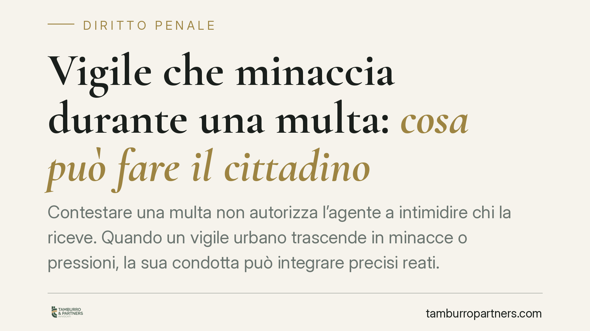

Vigile che minaccia durante una multa: cosa può fare il cittadino
Contestare una multa non autorizza l'agente a intimidire chi la riceve. Quando un vigile urbano trascende in minacce o pressioni, la sua condotta può integrare precisi reati. La qualifica pubblica non è uno scudo: al contrario, può aggravare la posizione dell'agente. Vediamo come inquadrare il fenomeno e quali passi valutare.

Il punto della questione
L'attività di accertamento di una violazione stradale è un potere autoritativo, ma disciplinato. L'agente può contestare il fatto, identificare, redigere il verbale. Non può usare la forza fisica ingiustificata né minacciare il cittadino per piegarne la volontà o per reagire a contestazioni verbali.
La giurisprudenza di legittimità ha affermato in più occasioni che l'esercizio di una pubblica funzione non copre le condotte prevaricatorie: quando l'agente eccede, la sua qualifica non attenua la responsabilità, ma può renderla più grave.
Inquadramento normativo
Non tutte le condotte intimidatorie di un pubblico ufficiale ricadono nella stessa fattispecie. La riconduzione automatica alla sola minaccia comune è un errore frequente.
La minaccia (art. 612 c.p.) punisce chi prospetta ad altri un danno ingiusto. È il reato base, procedibile a querela della persona offesa nell'ipotesi semplice. Se però l'agente usa la minaccia per costringere il cittadino a fare, tollerare od omettere qualcosa (ad esempio a non contestare il verbale, a consegnare un documento con modalità coartate), la condotta può integrare la violenza privata (art. 610 c.p.), più grave e procedibile d'ufficio.
Quando l'agente abusa della qualità o dei poteri per costringere o indurre taluno a dare o promettere denaro o altra utilità, si può configurare la concussione (art. 317 c.p.), reato dei pubblici ufficiali con cornice edittale severa. Diversa ancora è l'ipotesi in cui l'agente, violando norme di legge, procuri intenzionalmente a sé un vantaggio o arrechi ad altri un danno ingiusto: qui rileva l'abuso d'ufficio (art. 323 c.p.), oggi in forma ridimensionata dalle riforme recenti.
La qualifica non è neutra. Quando il fatto è commesso con abuso dei poteri o con violazione dei doveri inerenti alla pubblica funzione, si applica l'aggravante comune dell'art. 61 n. 9 c.p., che aumenta la pena per il reato di base. È questo il meccanismo tecnico per cui l'essere pubblico ufficiale, lungi dal proteggere, espone di più.
Cosa cambia per il cittadino
Occorre distinguere due situazioni che sul momento appaiono simili ma sono giuridicamente opposte.
Da un lato l'agente che contesta legittimamente: alza la voce, insiste sull'esibizione dei documenti, redige il verbale nonostante il disaccordo. È esercizio, anche fermo, di un potere.
Dall'altro l'agente che intimidisce: prospetta ritorsioni, minaccia conseguenze ingiuste, usa la propria posizione per coartare o per ottenere un'utilità indebita. Qui si esce dalla funzione e si entra nell'illecito penale.
La linea di confine è la finalità e il contenuto della condotta: contestare una violazione è lecito; annunciare un male ingiusto per costringere o per profitto non lo è.
Cosa fare in concreto
- Non reagire in modo aggressivo. Evitare escalation verbali o fisiche, che possono a loro volta esporre a contestazioni (oltraggio, resistenza).
- Annotare i dati identificativi. Numero di matricola, comando di appartenenza, targa del veicolo di servizio, data, ora e luogo esatti.
- Individuare eventuali testimoni. Raccogliere nominativi e recapiti di chi ha assistito alla scena.
- Preservare le prove. Conservare registrazioni audio o video lecitamente acquisite, il verbale ricevuto e ogni documento collegato.
- Valutare la querela. Per la minaccia semplice il termine è di tre mesi dal fatto; per le fattispecie procedibili d'ufficio è sufficiente la denuncia. Verificare quale ipotesi ricorre può essere opportuno tramite un consulto legale, per definire lo strumento e i termini corretti.
Il principio da tenere presente
La funzione pubblica non è uno scudo. Serve a garantire l'ordine, non a coprire condotte prevaricatorie. Il cittadino che subisce una minaccia da parte di un agente non è privo di tutela: dispone di strumenti penali precisi, la cui scelta dipende dalla condotta concreta e dal fine perseguito dall'operatore.
---
Contributo informativo a cura di Tamburro & Partners - Avv. Giuseppe Tamburro. Non costituisce parere legale.
Ogni condominio ha una storia a sé.
Se gestisci un'amministrazione e vuoi un confronto su una specifica questione condominiale, scrivi allo studio. Ti rispondiamo entro un giorno lavorativo.